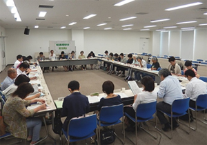

 9月15日(火)13時30分より、浦和コミュニティセンター第15集会室にて第6回実行委員会が開催され、30人(22団体)事務局2人が出席しました。
■議題
1．第5回実行委員会報告
事務局から資料を使いながら、前回からの修正・変更点となる項目について確認しました。
2．第51回大会埼玉県への要請書について
第5回実行委員会での検討をもとに修正した最終案を報告し確認しました。その結果、前回の項目に追加して、彩の国だよりの充実を求める項目、頻発する自然災害に対応するために、自治体を越えた連携を求める記述を追加することと、修正の上、大会に提出することを確認しました。
また、要請書をもとに行う埼玉県との懇談に向けて重点となる項目を大会当日の終了後の会議で確認することになりました。
3．第51回大会のアピールについて
いままで話し合ってきた基調報告、要請書の内容をもとに、大会で採択するアピールについて事務局の作成した案をもとに、検討を行いました。検討を受けて、平和をめぐる情勢が日々変わっていく状況があり、情勢の変化を取り入れて、当日の別資料とすることを確認しました。
4．大会当日の動きについて
当日のスケジュールの再確認、集合時間の確認など、事務局が作成した文章をもとに確認しました。また、檀上に上がるメンバーの再確認、お弁当の変更などについても、事務局集約をもとに再確認しました。
5．大会当日の配布資料について
大会当日に配布する資料、会場でのチラシや署名などの扱いについて、分科会資料の考え方などについて確認しました。
6．消費生活関連事業調査の結果について
1999年より取り組んでいる自治体の消費生活関連事業調査が、今年度も県内全63自治体からの回答をもとにまとまったことについて報告しました。あわせて、これからは調査結果を持っての自治体訪問を計画する旨の報告があり、参加を消費者団体に呼びかけました。
7．分科会について
 食、
食、 消費者問題、
消費者問題、 社会保障、
社会保障、 くらしの問題、
くらしの問題、 憲法・法律の5つの分科会にわかれて、当日のすすめ方を中心に最後の確認を行いました。
憲法・法律の5つの分科会にわかれて、当日のすすめ方を中心に最後の確認を行いました。
8．事務局連絡
第7回実行委員会については、午後を埼玉県との懇談とすることを報告しました。日程については、埼玉県と調整の上、会場が決まり次第、報告する旨を伝えました。